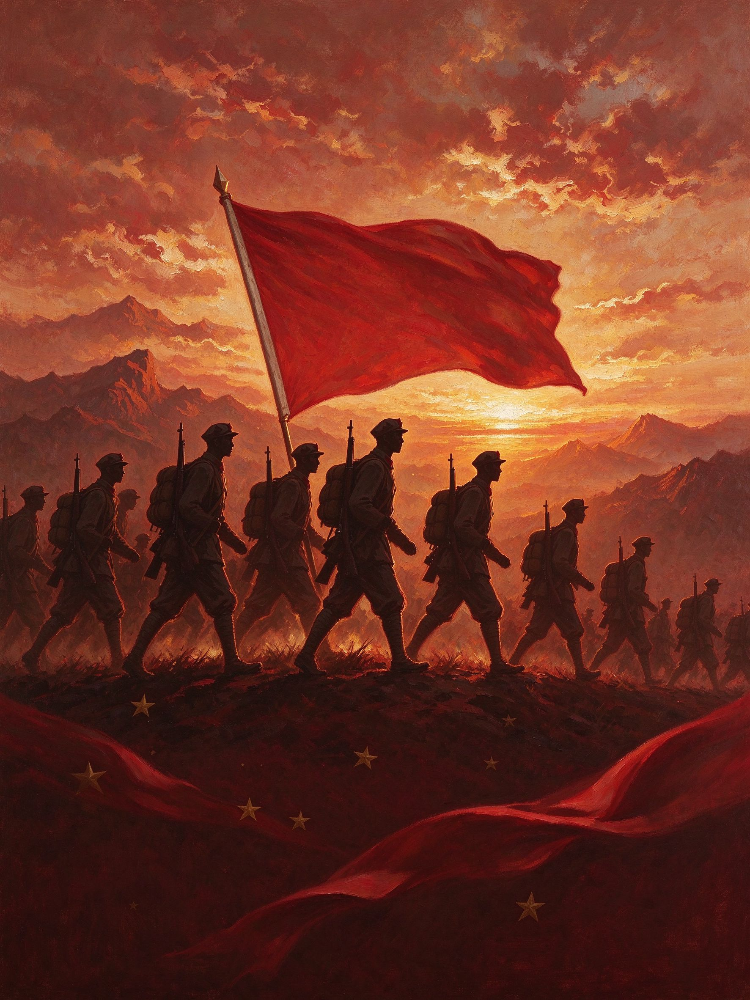
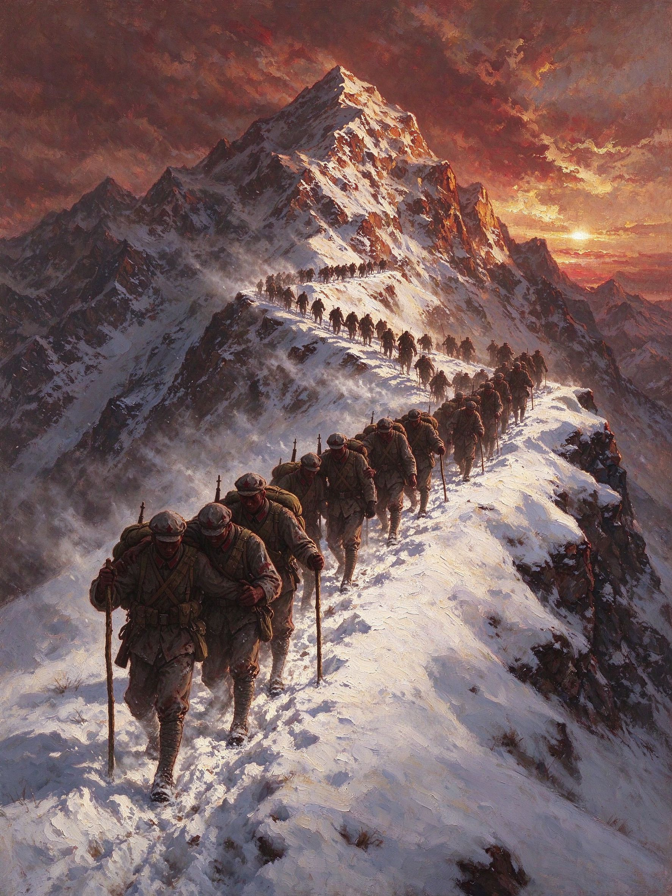
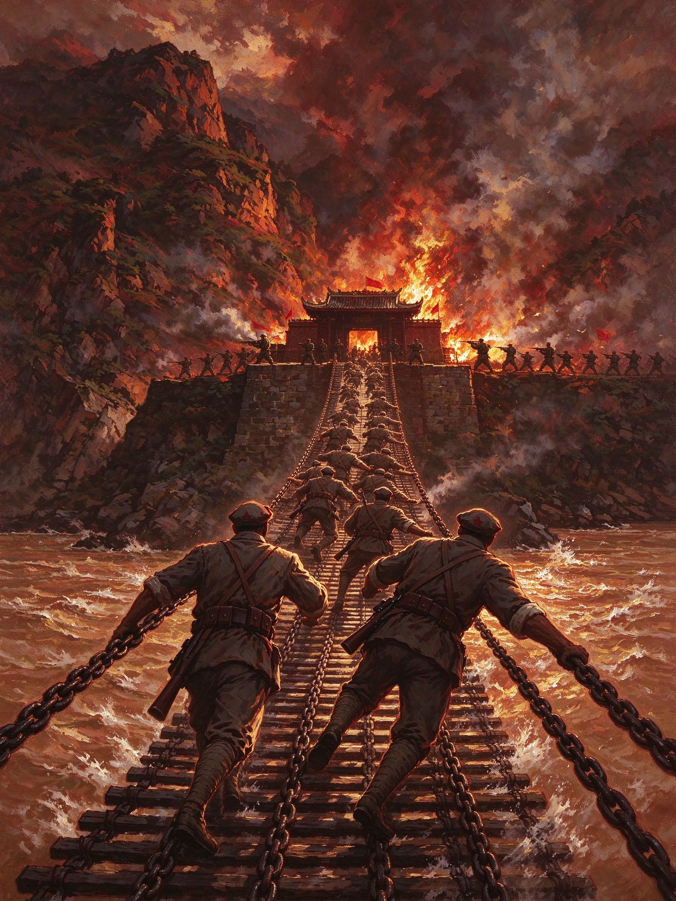

纪念中国工农红军长征胜利90周年
长征万里铭初心
数字传情续红魂
—— 红色革命文化科普 H5 ——

该图片由 AI 生成
什么是长征
1934年10月，第五次反"围剿"失利后，中央红军主力八万余人被迫实行战略转移，从江西瑞金出发，踏上漫漫征途。
红军先后翻越崇山峻岭、跨越江河天险，战胜数倍于己的敌人，行程约两万五千里。
1936年10月，三大主力在甘肃会宁胜利会师，长征胜利结束。
长征大事记
1935.1 遵义会议
确立以毛泽东为代表的正确领导，红军转危为安。
1935.1—3 四渡赤水
毛泽东指挥，以少胜多，彻底摆脱敌军围追堵截。
1935.5 强渡大渡河·飞夺泸定桥
红军勇士攀铁索、冒弹雨，突破天险。
1935.6 翻越夹金山
克服雪山高寒缺氧，创造人间奇迹。
1935.8 穿越水草地
忍饥挨饿，靠团结和意志走出绝境。
1936.10 会宁会师
三大主力胜利会师，长征胜利结束。

该图片由 AI 生成
英雄的故事
飞夺泸定桥
1935年5月，大渡河天险横亘在前。红军22名勇士身挂冲锋枪，攀爬十三根铁索，冒着对岸枪林弹雨强行突进。
他们用血肉之躯为全军杀开一条生路，创造了战争史上的奇迹。

该图片由 AI 生成
伟大长征精神
① 理想信念：把中华民族根本利益看得高于一切，坚定革命必胜信念。
② 不怕牺牲：不怕任何艰难险阻，不惜付出一切牺牲。
③ 独立自主：实事求是，一切从实际出发。
④ 依靠人民：同人民群众生死相依、患难与共。
七律·长征
红军不怕远征难，
万水千山只等闲。
五岭逶迤腾细浪，
乌蒙磅礴走泥丸。
金沙水拍云崖暖，
大渡桥横铁索寒。
更喜岷山千里雪，
三军过后尽开颜。
—— 毛泽东
科普小问答
Q1 中央红军长征出发时间是？
Q2 三大主力胜利会师的地点是？
传承与铭记
每一代人有每一代人的长征。
今天的我们，依然需要长征精神指引——
坚定信念、艰苦奋斗、不怕困难。
让红色基因代代相传，
让长征精神永放光芒。
铭记历史
致敬先烈
长征精神 · 永放光芒
罗定职业技术学院 文化体育旅游学院 旅游管理专业
参赛作品 · 制作团队：黄舒怡 赵婉珍